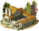
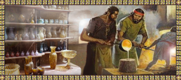
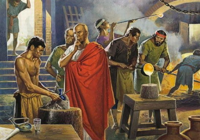
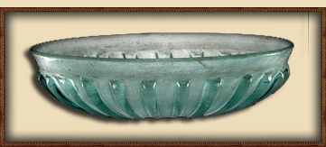
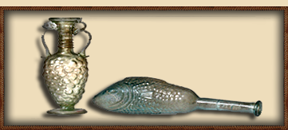

RTR: Imperium Surrectum
RTR: Imperium SurrectumSmall Glass Reworking Shop (Urban) chain
4 levels, each replacing the one before it — you upgrade in place rather than building alongside.
Small Glass Reworking Shop (Urban) → Large Glass Reworking Shop (Urban) → Glassware Workshop (Urban) → Fine Glassware Artisans (Urban)
Pictures are the game's own building art. Where a culture ships none of its own, the game falls back to another culture's, and that is what is shown here.
Levels at a glance
| Level | Cost | Build time | Minimum settlement | Upgrades to | Level | Cost | Build time | Minimum settlement | Upgrades to | ||
|---|---|---|---|---|---|---|---|---|---|---|---|
| Small Glass Reworking Shop (Urban) | 1,000 | 2 | large town | Large Glass Reworking Shop (Urban) | Large Glass Reworking Shop (Urban) | 2,500 | 4 | city | Glassware Workshop (Urban) | ||
| Glassware Workshop (Urban) | 5,000 | 6 | large city | Fine Glassware Artisans (Urban) |  | Fine Glassware Artisans (Urban) | 7,500 | 8 | huge city | — |
Costs in denarii, build time in turns.
Large Glass Reworking Shop (Urban)

A large glass industry has developed, and its creations now adorn both the humble and the noble alike.
“See how breath shapes the vessel? Remarkable, just don’t sneeze!”
Glassmaking has flourished here, with workshops expanding into bustling hubs of artistry and industry.
Now goblets, ornaments, and the occasional clumsy attempt at a glass window fill the shelves. The artisans, once lone craftsmen, now command teams of helpers (and a good share of slaves), all labouring to turn raw glass into sparkling treasures.
As glass becomes a hot local commodity, the artisans fancy themselves philosophers of form and function. With each successful creation, they inch closer to making the humble drinking cup a thing of legend.
Soon, nobles and merchants alike will clamour to toast in glasses so fine, they might even survive a careless servant’s grip. Now, if we could only acquire access to the lands of the Levant and Egypt where this raw glass is made we could establish a truly great industry here.
| Cost | 2,500 denarii | Build time | 4 turns | Minimum settlement | city | Upgrades to | Glassware Workshop (Urban) |
What it does
- +2 trade income
Fine Glassware Artisans (Urban)

Fine glassware is now exported far and wide, turning fragile beauty into hard profit.
“A master craftsman can name his price, and with work this fine, the price is high!”
Our glass industry has transformed into a true empire, with goods sought after by distant kingdoms and envied even by our rivals.
This complex hums with activity, artisans working at peak skill, creating pieces so fine that to drink from them feels like a privilege.
From noble courts to the altars of the gods, our glass finds its way into the homes and hearts of many, adorning tables, shrines, and the wealthy’s curious cabinets. Merchants travel far and wide to secure our wares, bringing tales of our glasswork to every corner of the known world.
This region may be humble, but its glass is priceless, attracting a price as magnificent as its reputation.
| Cost | 7,500 denarii | Build time | 8 turns | Minimum settlement | huge city |
What it does
- +6 trade income
Small Glass Reworking Shop (Urban)

A small glass workshop has been established, where beauty is blown into shape, if it doesn’t crack along the way.
Guaranteed to make any wife smile… until she drops it!
In this small workshop, imported raw glass bricks or beads are carefully melted to craft into beautiful, if slightly lopsided, vases and cups. This is where beauty is blown into shape, if it doesn’t crack along the way.
Their creations are a fragile marvel, each piece carrying the risk of shattering with the gentlest knock, a test of nerves for both maker and buyer! But when successful, the results are dazzling, leaving onlookers marvelling at their transparent beauty, and perhaps sparking a dream or two of owning such a treasure.
The work is risky, but for the artisan, each glass is a small victory against the odds (and occasional sneezes).
| Cost | 1,000 denarii | Build time | 2 turns | Minimum settlement | large town | Upgrades to | Large Glass Reworking Shop (Urban) |
What it does
- +1 trade income
Glassware Workshop (Urban)

The glass industry has grown into a vast enterprise, producing wares so fine they might even survive a clumsy servant.
“Even the gods would be impressed!”
Our glass production has reached new heights of mastery, with workshops expanding to produce everything from delicate jewellery to sturdy wine bottles.
Here, skilled artisans create flawless works, each piece a testament to their mastery.
Local lore has it that our glass is so fine, a single goblet could bring peace between two bickering nobles (or at least distract them momentarily).
When the city’s finest men drink, it is in cups crafted by these very hands, and rumour has it that even the gods might look upon our wares with envy. As the glass leaves the factory by the amphora-load, we establish our status as the true glassmakers of the world.
This region is now famed for its glassware, known throughout the world for its clarity and elegance.
| Cost | 5,000 denarii | Build time | 6 turns | Minimum settlement | large city | Upgrades to | Fine Glassware Artisans (Urban) |
What it does
- +4 trade income